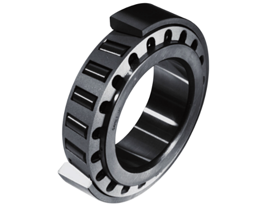
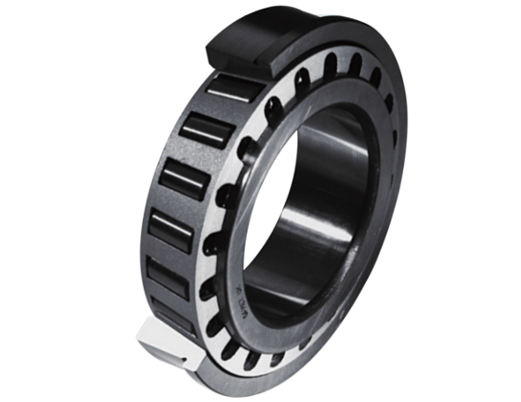
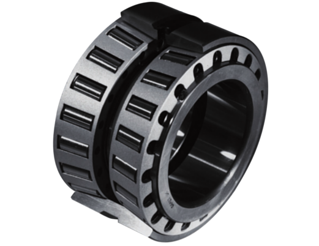
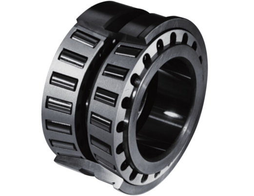
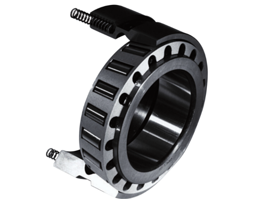

Bearing Types & Tolerances
Learn about our standard Plain, Flanged, and Double Row tapered bearing structures alongside our strict manufacturing precision controls.
Types & Configurations

Plain Cup
The basic single row bearing. Designed for light to medium loaded applications. Provides a reliable, simple, cost-effective arrangement.

C Type (Flanged)
A flanged cup version that simplifies housing prep. It enables through boring of the housing for high machining accuracy and simplicity.

G Type
Double row plain cup. Offers nearly twice the capacity of equivalent single row bearings, essential for heavily loaded industrial applications.

H Type
Double row flanged cup. Like the G Type, this bearing offers double capacity but includes an outer flange for rigid axial seating in through-bored housings.

P Type (Pre-loaded)
Features an extended outer ring housing load springs. Free to slide in the housing, it ensures constant preload despite thermal expansion across varying temperatures.
Manufacturing Tolerances
Gamet Bearings guarantees exceptionally accurate manufacturing tolerances critical for precision machinery spindles (as extracted from Gamet TRB Catalog Pg 4).

Bearing Specifications & Precision Classes
Gamet Bearings are manufactured to P2 (ISO/DIN) equivalent tolerances as a baseline minimum. For cutting edge spindle engineering, our proprietary Q and QK specifications exceed even the most rigorous global standards.
| Standard Bearing Class | High Precision Bearing Class | ||||||||
|---|---|---|---|---|---|---|---|---|---|
| System | Specification | Bearing Type | Ultra Precision | ||||||
| Metric | Timken | Tapered Roller Bearings | K | N | C | B | A | AA | - |
| ISO/DIN | All Bearing Types | P0 | P6 | P5 | P4 | P2 | - | - | |
| ABMA | Tapered Roller Bearings | K | N | C | B | A | - | - | |
| GAMET | Machine Tool Spindle Bearings | - | - | - | - | P2 (Default) | Q | QK | |
| Inch | Timken | Tapered Roller Bearings | 4 | 2 | 3 | 0 | 00 | 000 | - |
| ABMA | Tapered Roller Bearings | 4 | 2 | 3 | 0 | 00 | - | - | |
Q Specification (Reduced Runout)
Internal bearing runout is restricted to tighter margins than strict ISO P2 (Class A), typically required for sub-micron geometric milling.
QK Specification (Ultimate Precision)
Gamet's highest technical ceiling. Both runout and dimensional mounting tolerances are controlled to absolute operational limits.